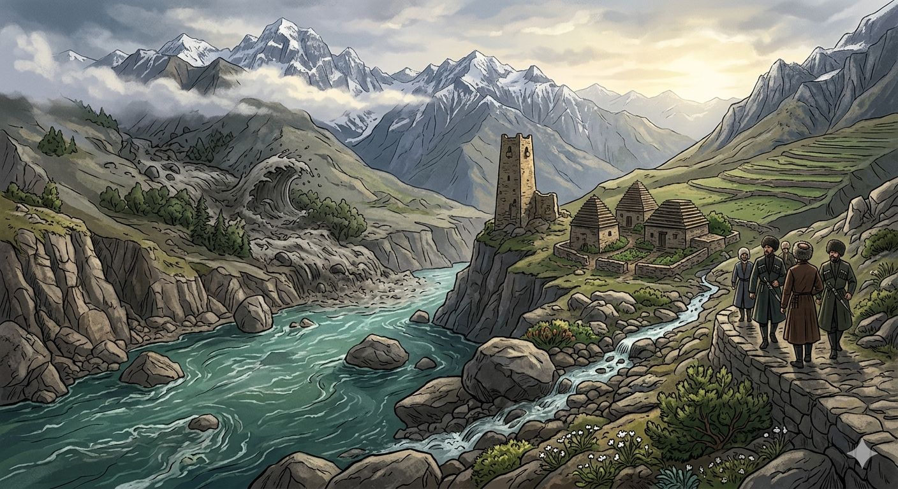

И.А. Дахкильгов. Хьехаме дувцарш - поучительные рассказы-притчи.
И.А. Дахкильгов. Хьехаме дувцарш - поучительные рассказы-притчи. Из ингушского фольклора.

Эсеи хина тоатоли
Лоамма Эсах дӀакхеташ хиннад дол миссел мара кхы доккхагӀа хургдоаца тоатолг. Дилла Эсах хьогаш хиннад из. Цкъа лоамашка доккхий догӀаш а дийлха, цу тоатолгах Ӏаьржача хих хьахилар доккха хий. ТӀой керчадеш, гӀаръяьккха доагӀаш хиннад из. Эсах дӀадеталуш, курал еш хиннай сайсача тоатоло. - ХӀанза мишта хет хьона Эса? Со фу даь да хьол эсалагӀа? Гаций хьона, мел доккха доагӀаш да со? ХӀама аьннадац Эсас. Ди-бийса дӀадахад, догӀаш сайцад, хиш а лекъад, юха а тоатолг тӀехиго доагӀаш а, йист хила низ боацаш а хиннад, тӀаккха Эсас аьннад: - Йист хӀана хилац хьо? Фу хиннад хьа куралах? Юха йист хила денал долаш хиннадац тоатолг. Циггач аьннад цунга Эсас: - ДӀаховлда хьона, догӀаш делхар-делхацар аьнна, со се мадарра Эса да хьона. Цул тӀехьагӀа кхы йист хила дихьадац из тоатолг.
РУССКИЙ
Река Асса и ручеек
В горах в реку Ассу впадал ручеек не шире локтя. Он постоянно завидовал реке, поскольку она намного шире, многоводнее. Однажды в горах прошли большие дожди. Ручеек превратился в реку и заполнил все ущелье. Прорезался у ручейка голос, и ручей стал заноситься перед Ассою: - Ну, как я тебе? Видишь, я не хуже тебя. Смотри, какой многоводной рекою я стал. Асса промолчала. Прекратились дожди, иссякли большие воды, и ручеек вновь стал безмолвным, скудным. Тогда Асса сказала: - Знай, ручеек, дожди только временами бывают, а я всегда была и осталась Ассой! С тех пор ручеек ни разу не подал голоса.
ENGLISH
The River Assa and the stream
In the mountains, a stream no wider than an elbow flowed into the River Assu. It was constantly envious of the river, as the river was much wider and had a much greater flow. One day, there was heavy rain in the mountains. The little stream turned into a river and filled the entire gorge. The little stream found its voice and began to boast to the Assa: 'Well, what do you think of me now? You see, I'm no worse than you. Look what a mighty river I've become.' Assa said nothing. The rains ceased, the floodwaters receded, and the little stream once again became silent and meagre. Then Assa said: 'Know this, little stream: rains come only from time to time, but I have always been, and always will be, Assa!' Since then, the little stream has never spoken again.
НОХЧИЙН
ПОГОВОРКИ
АргӀа йоаца эгӀазло – шера бола бала. Рассердился невпопад – нажил горя на год.Бокъо Ӏоацаш Ӏийха пхьу берташа бихьаб. Без дела брешущую собаку волки унесли.Йист ца хилар тол хьона, хьай дош оттаргдоацача. Лучше промолчи там, где твое слово не будет весомым.Мотт кхаьбачун корта лозабаьннабац. У молчуна голова не болит.Муш бӀаьха дика ба, дош лоаца дика да. Веревка хороша длинная, а речь - короткая.МӀадаштеи колдаштеи юкъе уле а, дошо – дошо да. Даже среди грязи и помоев золото остается золотом.Нахаца дукха лийначо дукха дийшар къарваьв. Бывалый переспорит начитанного.Овла боаца баӀ михо ловзабу. Репейник без корня – игрушка для ветра.Хургдоацар ма дувца, аьннар кхоачашде. Не обещай несбыточного, исполняй обещанное.ЧӀоагӀа вац дулхагӀа воацар. Лишь мускулистый может быть крепким.Ӏайха аьннача деша жоп даллал хьо веце, йист ца хулаш дӀаӀе. Если не сможешь ответить за свои слова, - сиди и молчи.Ӏовдалча наха хьаькъал – йист ца хилар да. Ум дурака – в молчании.